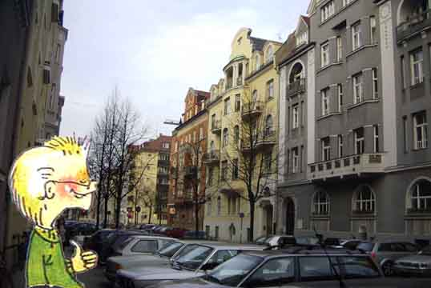
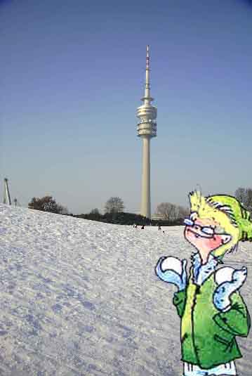
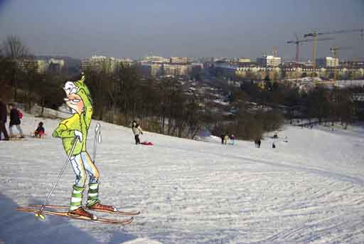
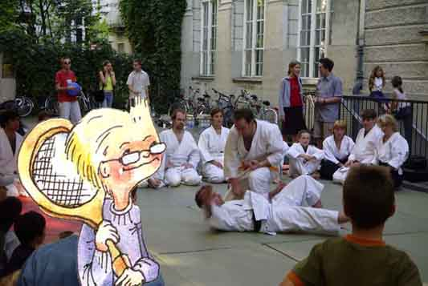
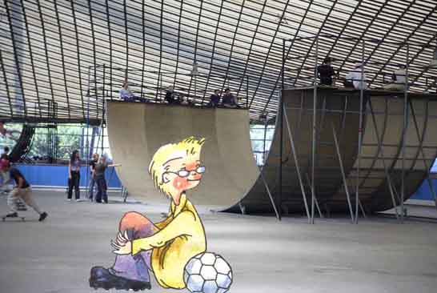
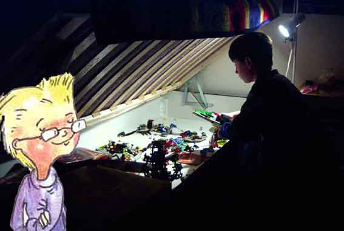
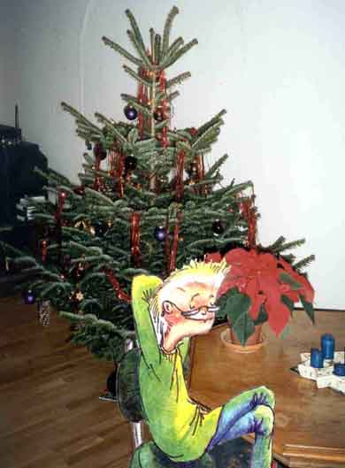

Hi, Leute, ich bin Daniel Waldmann und wohne in diesem Altbau in der Agnesstraße.

Der Winter ist nicht unbedingt meine Lieblingsjahreszeit. Aber wenn es schneit, gehe ich raus und spiele Schneeballschlacht mit Florian und Ramon.

Oder ich fahre Ski. Das tue ich auch gern.

Seit zwei Jahren mache ich Judo. Ich gehe zweimal in der Woche zum Training. Mein Sportlehrer sagt, dass ich ziemlich gut bin. Durch das regelmäßige Training habe ich mehr Kraft und Ausdauer und kann mich im Unterricht besser konzentrieren.

Ramon mag Inline-Skating. Manchmal gehe ich mit.

Das ist Michael, mein Cousin. Er ist 10 und spielt gern Lego. In seinem Sofa bewahrt er seine Schätze auf.

Weihnachten ist mein Lieblingsfest. Wir feiern immer zu Hause. Der schöne Weihnachtsbaum, die Kugeln, die Kerzen – das gefällt mir. Ich freue mich auf viele Geschenke und natürlich auf die Weihnachtsferien.